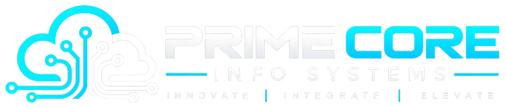

Hidden System Dependencies
Complex enterprise applications often rely on undocumented database linkages, legacy APIs, and hardcoded IPs that risk broken workflows during migration.

PRIMECORE INFO SYSTEMSProject Showcase / Cloud Solution
Automated Workload Discovery, Risk-Free Landing Zones & Zero-Downtime Migration Orchestration
Accelerate your transition to AWS, Microsoft Azure, and hybrid cloud environments with automated dependency mapping, security guardrails, and real-time operational telemetry.
02 — The Problem
Legacy systems often delay digital transformation due to unmapped dependencies, fear of downtime, and operational uncertainty.
Complex enterprise applications often rely on undocumented database linkages, legacy APIs, and hardcoded IPs that risk broken workflows during migration.
Mission-critical applications cannot afford operational cutover outages. Traditional lift-and-shift methods risk hours of revenue-impacting downtime.
Without upfront workload rightsizing and FinOps governance, cloud environments frequently over-provision resources, resulting in unexpected budget overruns.
Migrating sensitive workloads requires strict adherence to regulatory standards (CIS, HIPAA, ISO). Missing guardrails during cutover exposes critical vulnerabilities.
03 — Core Features
A comprehensive platform engineered to automate, secure, and streamline every stage of your cloud journey.
Agentless scanning automatically maps all server, database, and API interconnectivity to eliminate migration blind spots.
Deploys pre-configured, security-hardened AWS and Azure landing zones using Terraform and CloudFormation templates.
Continuous block-level and database replication allows live validation before switching traffic over seamlessly.
Simulate target cloud costs prior to cutover and optimize resource instances for maximum cost efficiency.
Enforces zero-trust access, encrypted transport, and compliance logging automatically across target cloud environments.
Unified performance dashboard monitors latency, uptime, and system health in real-time post-migration.
04 — System Screenshots
Explore the intuitive interface, real-time migration dashboards, and orchestration tools.
Real-time orchestration interface for monitoring active migration waves, server status, and cutover throughput.
Interactive discovery map displaying interconnected microservices, legacy database links, and API routes.
Pre-migration cost simulation dashboard analyzing target cloud expenditure and instance rightsizing.
05 — Business Benefits
Engineered to deliver tangible operational efficiency, cost reduction, and security assurance.
06 — Pricing & Packages
Transparent pricing tiers tailored to your organization's workload volume and infrastructure requirements.
Ideal for initial cloud readiness audit & workload mapping.
Complete end-to-end migration execution with zero-downtime SLA.
Post-migration 24/7 monitoring, FinOps & governance.
[ Pricing Configuration Placeholder — Final pricing models and figures are customized based on verified project scope ]
07 — Demo Video
Watch how the Enterprise Cloud Migration Platform automates discovery and executes live migration waves.
Supports YouTube, Vimeo, or Hosted MP4 Embed URLs.
[ Configuration Note: Replace this placeholder container with your iframe / video player embed code when available ]08 — Customer Story
A structured look at how complex workload challenges are transformed into operational success.
Enterprise Healthcare / Financial Services Organization with multi-region hybrid datacenters.
150+ legacy VMs with inter-dependent SQL databases requiring zero downtime cutover under strict HIPAA compliance rules.
Deployed automated discovery agents, built automated IaC landing zones in AWS, and executed continuous data replication over 4 wave stages.
100% of workloads migrated on schedule with zero customer-facing downtime and complete compliance verification.
09 — Frequently Asked Questions
Clear answers to common questions about deployment, integration, and security.
The platform natively supports migration to AWS (Amazon Web Services), Microsoft Azure, Google Cloud Platform (GCP), and hybrid VMware/on-premises landing zones.
It utilizes continuous, block-level and database sync engines that keep target cloud instances completely up-to-date while legacy systems remain live until final DNS cutover.
Both agentless (via hypervisor / API credentials) and lightweight agent-based discovery options are available to fit your security and network architecture requirements.
Yes. Pricing is flexible and scalable based on the number of workloads, databases, and continuous management requirements.
You can click the "Book Free Demo" button on this page or reach out directly via our contact form or WhatsApp connection.
10 & 11 — Get Started & Direct Contact
Book a personalized demonstration with our cloud infrastructure team or connect with us directly via WhatsApp to discuss your project requirements.